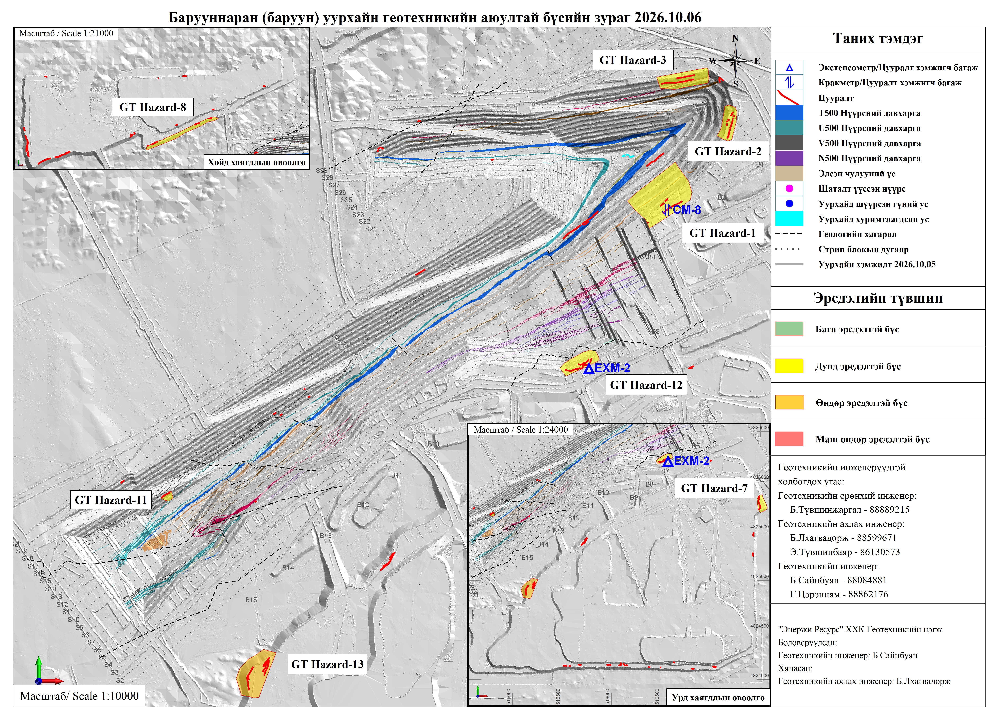

GT Hazard-8
Үерийн ус урсаж хаягдлын овоолго доогуур шургаснаар урд ирмэг дагуу давхар цууралт үүссэн. Тус цууралт нь 1610м түвшинд 750м орчим урттай. Ирмэгээс 1-2м зайд хамгаалалтын хөмсөг тавьж тээвэрлэлтийн замаас тусгаарласан. Шинээр ирмэг дагуу хагарал, цууралт үүсэх, гулсалт нуралт ажиглагдах буюу тогтворгүй нөхцөл байдал үүсэх тохиолдолд геотехникийн инженерт яаралтай мэдэгдэж шалгуулах шаардлагатай.

GT Hazard-1
Стрип 2-3 уурхайн урд өндөр хананы ирмэг дагуу өгөршсөн хөрс чулуулагтай зөөлөн материал дээр ирмэг дагуу цууралтууд үүссэн. Гадарга дээр хэд хэдэн цууралтууд байгаа ба мониторинг хийх зорилгоор кракметр багаж байршуулан хэмжилтийг тогтмол хийж байна. Эрсдэл бүхий талбайн үзлэгийг "TARP"-ын дагуу тогтмол хийх, тухайн эрсдэлтэй бүсэд ойр ажиллах тохиолдолд JHA болон Эрсдэлийн үнэлгээ хийж ажиллана.

GT Hazard-2
Өгөршсөн хөрс чулуулагтай зөөлөн материал дээр ирмэг дагуу дугуй хэлбэрийн цууралтууд үүссэн. Шинээр ирмэг дагуу хагарал, цууралт үүсэх, гулсалт нуралт ажиглагдах буюу тогтворгүй нөхцөл байдал үүсэх тохиолдолд геотехникийн инженерт яаралтай мэдэгдэж шалгуулах шаардлагатай.

GT Hazard-3
Өгөршсөн хөрс чулуулагтай зөөлөн материал дээр ирмэг дагуу дугуй хэлбэрийн цууралтууд үүссэн. Шинээр ирмэг дагуу хагарал, цууралт үүсэх, гулсалт нуралт ажиглагдах буюу тогтворгүй нөхцөл байдал үүсэх тохиолдолд геотехникийн инженерт яаралтай мэдэгдэж шалгуулах шаардлагатай.

GT Hazard-7
Үерийн ус урсаж хаягдлын овоолго доогуур шургаснаас үүдэж суулт өгч, давхар цууралт үүссэн. Тус цууралт нь 1570м түвшинд 160м орчим урттай. Ирмэгээс 1-2м зайд хамгаалалтын хөмсөг тавьж тээвэрлэлтийн замаас тусгаарласан. Цууралт үүссэн тухайн эрсдэлтэй бүсийг тээврийн замаас тусгаарлаж тавьсан хамгаалалтын хөмсгийг гүйцээх. Аюулгүйн зай авч буулгалт хийх. Буулгалт авсан хэсэгт дозероор дүүргэлт хийж аюулыг арилгасны дараа тэлэлтийн ажлыг эхлүүлэх.

GT Hazard-11
Баруун уурхайн налуу зам 4-н хойд хананы 1500-н түвшингийн 10м доголын ирмэг дагуу V500 нүүрсний давхраас дээр давхар цууралтууд үүссэн. Эрсдэл бүхий талбайн үзлэгийг "TARP"-ын дагуу тогтмол хийх, тухайн эрсдэлтэй бүсэд ойр ажиллах тохиолдолд JHA болон Эрсдэлийн үнэлгээ хийж ажиллах. Шинээр ирмэг дагуу хагарал, цууралт үүсэх, гулсалт нуралт ажиглагдах буюу тогтворгүй нөхцөл байдал үүсэх тохиолдолд геотехникийн инженерт яаралтай мэдэгдэж шалгуулах шаардлагатай.

GT Hazard-12
Барууннаран баруун уурхайн урд ахилтын бүс RL-1550 түвшингийн доголын ирмэгээс 9м зайд 50м урттай, RL-1560-н түвшингийн доголын хажуугийн нүүр хэсгийг хамарсан 120м урттай зэрэгцээ цууралтууд үүсч 30-40 см суулт явагдсан. Тухайн эрсдэлтэй хажуу налууд экстенсометр багаж байршуулан хэмжилтийг тогтмол хийж байна. Эрсдэл бүхий талбайн үзлэгийг "TARP"-ын дагуу тогтмол хийх, тухайн эрсдэлтэй бүсэд ойр ажиллах тохиолдолд JHA болон Эрсдэлийн үнэлгээ хийж ажиллах. Шинээр ирмэг дагуу хагарал, цууралт үүсэх, гулсалт нуралт ажиглагдах буюу тогтворгүй нөхцөл байдал үүсэх тохиолдолд геотехникийн инженерт яаралтай мэдэгдэж шалгуулах шаардлагатай. Цууралттай хажуу налуугийн ойр хийгдэх тэсэлгээний нэг агшинд зарцуулах тэслэх бодисын хэмжээг боломжит хамгийн бага түвшинд байлгах, тэсэлгээний дараа тухайн хэсгийн ирмэг дагуух үзлэгийг тогтмол хийж, өөрчлөлтийг мэдээллэх

GT Hazard-13
Баруун уурхайн урд хаягдлын овоолгийн 1570-н түвшинд борооны улмаас хуучин цууралттай хэсэгт 20-30 см орчим урттай суулт үүссэн. Ирмэгээс 1-2м зайд хамгаалалтын хөмсөг тавьж тээвэрлэлтийн замаас тусгаарлах. Цууралт үүссэн тухайн эрсдэлтэй бүсийг тээврийн замаас тусгаарлаж хамгаалалтын хөмсгийг гүйцээх. Аюулгүйн зай авч буулгалт хийх. Буулгалт авсан хэсэгт дозероор дүүргэлт хийж аюулыг арилгасны дараа тэлэлтийн ажлыг эхлүүлэх.